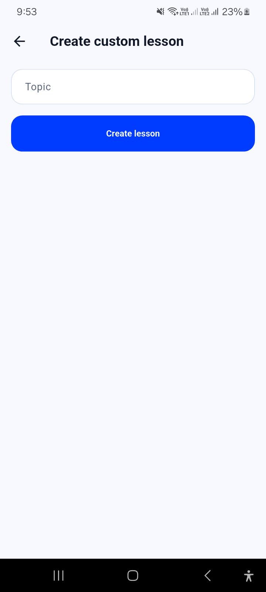
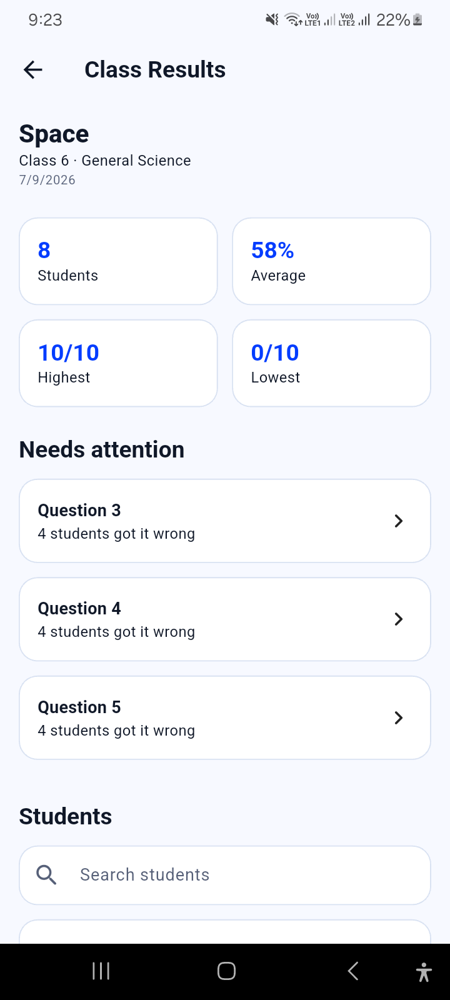
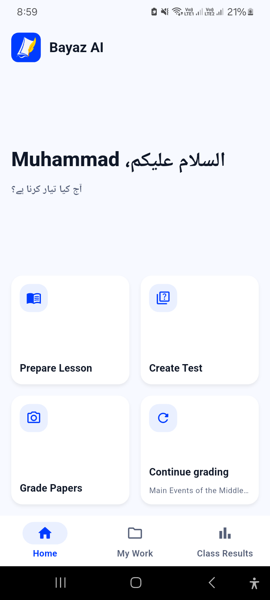
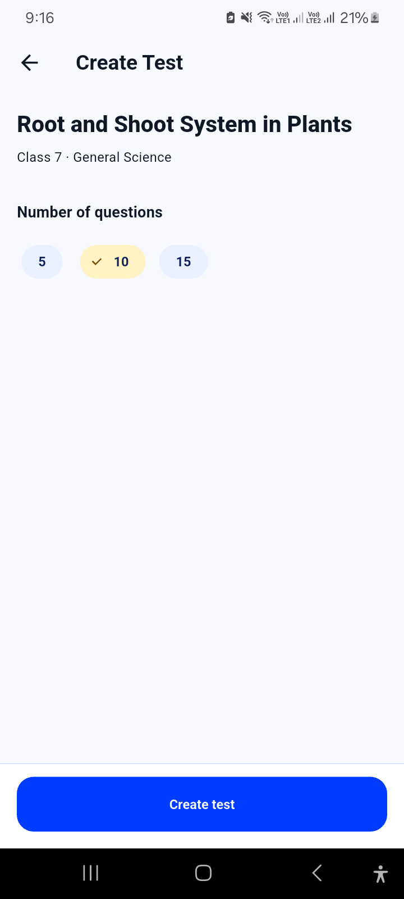
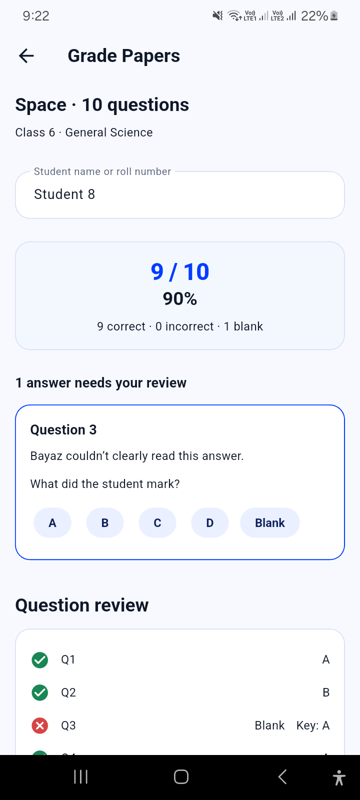
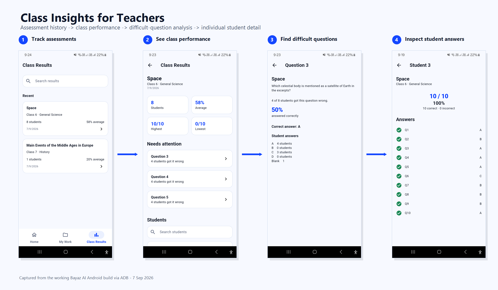
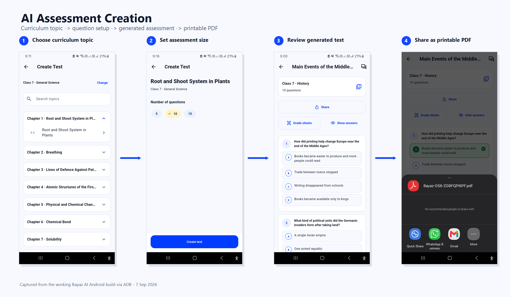

Guided lesson planning
Pick the class and curriculum topic, work from the structured lesson guidance, and save the plan in My Work.

Offline AI for teachers
Once its AI resources are downloaded, Bayaz runs on-device without an internet connection. Teachers can plan lessons, create tests, print them, grade answer sheets from a phone, and review class results in one app.


The workflow
Each step uses the class and curriculum context the teacher has already chosen, so work can move from preparation to results without rebuilding the context each time.
Pick the class and curriculum topic, work from the structured lesson guidance, and save the plan in My Work.

Choose a topic and question count. Bayaz generates the MCQs, then the teacher can review and export a printable PDF.

Take a photo or choose an image. Bayaz aligns its answer sheet, reads the marked bubbles, and checks the saved key.

Save the score, open the class view, and inspect questions that several students answered incorrectly.
OMR with teacher review
The grading pipeline scores answers it can read confidently. If a bubble is ambiguous, the app stops on that question and waits for the teacher to choose the answer before the result is saved.
Read automatically and checked against the saved answer key.
Shown in context so the teacher can make the final call.
Class results
Bayaz keeps each saved result tied to the assessment and class. The teacher can move from the class summary to a question or an individual student result.
Open a question to see how many students missed it and how answers were distributed.
Open an individual result and review the recorded answer for each question.


Paper-first classrooms
Teachers can prepare the assessment digitally while students receive an ordinary printed paper. The phone comes back into the workflow when the teacher is ready to grade.
Under the hood
The Android app combines Flutter, packaged curriculum content, optional local AI resources, PDF export, and a custom OMR pipeline.
The teacher app and its classroom workflow run on Android.
Packaged content gives lesson and assessment workflows the class and topic context they need.
Downloaded model resources support custom lesson and test features plus Ask Bayaz.
Alignment, bubble analysis and confidence checks are built around Bayaz answer sheets.
From the Android build
These boards use screenshots captured from the Bayaz build used during hackathon testing. Open any board to inspect it at full size.
Bayaz AI
Read the Flutter app, curriculum pipeline, OMR implementation, and project notes in the repository.